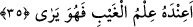
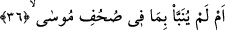
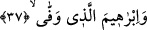
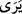
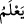

sığınırız!
“Bu yolda yırtın, uğraş, didin
Son nefese dek bir an bile boş durma.”
35. Acaba gaybın bilgisi kendi yanındadır da o görüyor mu?
“Acaba gaybın bilgisi kendi yanındadır da o görüyor mu?” Burdaki ( ) harfi
) harfi
sebebiyye için olup “görmek” fiili de kalbî fiil mânâsındadır. Âyetin mânâsı: “Onun
yanında bir kimsenin kıyâmet gününde arkadaşının azabını yüklenebileceğini de
kapsayan gaybî bilgiler olduğu için mi arkadaşının kendi azabını yükleneceğine
inanıyor?!”
İbn Şeyh şöyle der: “Bu cimri vericinin yanında âhiret ahvaliyle ilgili gaybi bilgiler
var da o bu sebeple mi arkadaşının kendi günahını yüklenebileceği kanâatine varıyor?
Buna göre () fiili, makamın delâleti sebebiyle iki mefulü hazfedilmiş () mânâsına
gelmiş olur.
36. Yoksa, Musa’nın sahifelerinde yazılı olanlar kendisine haber verilmedi mi?
“Yoksa” o câhil miydi de “Musa’nın sahifelerinde yazılı olanlar”; yâni Tevrat’ın
bölümlerinde bulunanlar, “kendisine haber verilmedi mi?”
Râgıb der ki: “Sahife, yüzün ön kısmı ve üzerinde yazı bulunan her yayılmış şeye
verilen isimdir. Çoğulu “sahâif” ve “suhuf”tur. “Mushaf” ise yazılmış sayfaları bir
arada toplayan şeydir.” Kuhistânî şöyle der: Mushaf, içerisinde okunacak şeylerin ve
sayfaların toplandığı kitaptır.
37. Ve ahdine vefa gösteren İbrahim’in (sahifelerinde yazılı olanlar)
“İbrahim” kelimesi Musa üzerine matuftur. Yâni “ve çok vefalı İbrahim’in
sahifelerinde bulunanlar” kendisine haber verilmedi mi? veya “Size İbrahim’in (a.s.)
Bakara suresinde geçen kelimelerle imtihanı bildirilmedi mi? Yahut da İbrahim’in (a.s.)
görevinde ihlal/bozukluk veya ihmalkârlık yapmaması ile emrolunuşu haber verilmedi